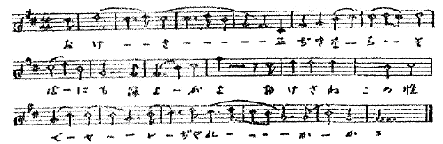
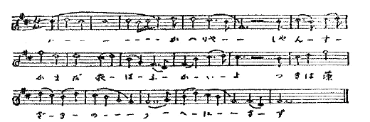
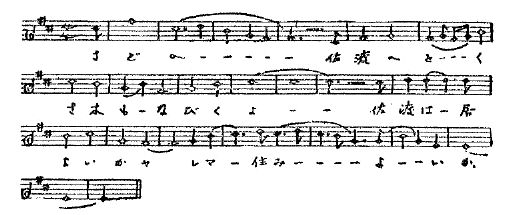
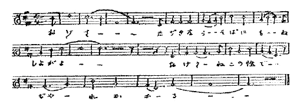
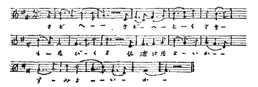
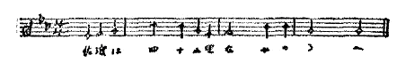
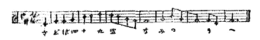

| 佐渡が島を出て 02 | |
| 江南 文三 | |
| (2012) | |
佐渡が島を出て
江南文三
佐渡が島を出てからひと月あまりになりました。白山神社の附近にたんぼがあつて赤蛙を取りに行つた東京、傳通院のぐるりが草原で蜻蛉やおおとを取りに行つた東京、あの附近に銘酒屋があつて、今日なくなつてしまつた「およなはいよ」と言ふ言葉で客をよんでゐた頃、お米屋さんがばたりばたりと足で踏んで米を搗いて居た頃、その前に鷄がくつくと鳴いてこぼれたのを拾つてゐた頃、前輪だけの馬鹿に大きな自轉車がよくうちの前のどぶに落ちた頃、お祭のときに山車が並んで鬱金木綿の襷を掛けた花笠の子供が揃ひの浴衣や紺のにほひのする印袢纒に交つて綱を引いたり萬燈をかざしたりしたあの頃からの東京、お互ひに半分だけ物を言へば通じる人のまだ住んでゐる東京、それが最早自分の故里と言ふ感じを少しも與へてくれなくなつてしまひました。
東京で育ちながら、神田鍛冶町の刀屋の娘を母に持ちながら、動物性の稀薄な作り物のやうな都會人の血を自分自身のうちに見ては厭はしいことに思ひ思ひしてゐた私が、此處が自分の住むべき處だと思つたのは佐渡が島の相川であつたのに、都會人の血が又しても厭な都會に私を引き戻しましたのです。
言葉も人も町並も昔の人をあとにして永久に續く繪卷物のやうに變つて行く東京が、震災後あまり市區改正をやられずに停滯してゐるのは私に取つて嬉しいことである筈なのに、人と言葉とはそれを見向きもせぬらしく、私が留守にしてゐたたつた二年半の間にすつかり變りました。
まるで外國です。塵溜のやうな外國です。黒つぽい著物の上に水淺葱の羽織を引つかけて恥かしくもなく往來を歩いてゐる無茶な女を見て氣が變にでもなつたやうな氣のした私は、神田橋から有樂町まで院線の電車に乘つて窓から見下ろした東京の中心を見て無理もないやうな氣にもなりました。何もかもやけです。埃まみれのコンクリイトに牢獄の窓よりも淺ましい穴があいてゐます。埃まみれのトタン屋根、棒、棒、棒、引金、曲つた棒、細い棒、太い棒、何處に色がある。トツカピン。甜めろ、甜めろ、泥をなめろ、飴を甜めろ、牛のけつを甜めろ、赤いおべべを着て踊れ。とんきような聲を出せ。蝦のやうにはねろ。高架線の上の針金を綱渡りしろ。無茶です。
しかし不思議です。一人も歌をうたつて居ない。ラヂオががあがあ言つて居る。しかし人は口笛さへ吹かない。自動車がぶうぶう言つてゐる。電車ががんがん言つてゐる。しかし人は笑聲さへ立てない。恐ろしい處です。墓場でせうか。地獄でせうか。雜音が威張り散らしてゐる。しかし人間は。あまりにしいんとしてゐる。
花やかな東京の中心地であつた日比谷の交叉點には泥水の池が出來てゐる。泥水には自動車の油がギラギラ浮いてゐる。
あんまり情ないではありませんか。人間を、生きてゐる人間を、生きながらあの泥水の中に、泥水を浴びせる自動車のまん中に、何のとががあつてでせう。交通巡査。交通巡査は物なのでせうか。
死神の運轉する機械、惡魔の油をさした機械。誰に責任があつて斯んな事をしてゐるのでせう。馬鹿なのでせうか。文明。文明つて斯んな物なのでせうか。もう道に疲れて後戻り出來ないのですか。飛んだ方向へ來てしまつてゐるではありませんか。氣の毒な。もう不滿を感じたり反抗したりする力もないのですか。
隱れた肉欲に僅ばかり殘された自由と力、猫の食器の隅に殘つた一二本の小骨のやうな自由と力、それが無かつたら全部死んでゐるのでせうね。
抽象的な理智と倣慢と虚榮とが人間を惡魔に賣つた。これは夢でせうか。
貨物自動車に泥水を浴びせられるのを恐れて軒下にすくむ人の顏には何らの表情もありません。それを當然の、天から與へられた運命とでも思つて居るのでせうか。犬でさへ怒つて吠えるでせうに。
嘲笑と苦笑との外に笑のあることを覺えてゐるのでせうか。筋肉は萎縮して笑の感覺を忘れてしまつてゐはしませんか。横つ腹の痛くなること、涙の出ること、激しくなると立つてゐられなくなつて寢て手足をばたばたやるやうになるものだとは知りますまい。
しかしこれは震災前からのことだつた。
代代木中野方面の徳川三百年の苦心で作つた防風林をどしどし切つて行く東京、徳川末期の名人の名をさへ忘れた日本、震災のための廣場をつぶして人を殺した東京、徳川の時代にあつた檢見を六十年も忘れてゐた日本。
小學校で唱歌を教へさせて何のためだか知らずに通して來た日本。
折角教はつたが歌へない。
歌を歌ひたいものはまづ酒を呑まなければならない。すくなくとも醉つたふりをして丸橋忠彌以上の苦心をしなければならない。然らずんばしかつめらしい顏をして謠曲をうたはなければならない。
講談本は隱れても讀める。しかし安木節も鴨緑江も八木節も磯節もデツカンシヨも人にきこえないやうに歌はなければならない。子供に示しがきかないさうである。
長唄とか新内とか歌澤とか清元とか富元とか乃至義太夫なら少しはいいかも知れないが、下地さへ學校で教へてくれない。踊などはもつての外だ。盆踊は一時は全國的に禁止された位だ。
隱れた肉欲以外に人は樂しんではならぬ、生きてはならぬ。機械になれ。震災當時に自分のすべきことをはじめて思ひ出すことにして、あとはただ機械になれ。震災のときだけは思ひ出して書類を捨てて逃げるやうな醜態を演ずるな。
馬鹿。木偶。完成された月給取。奴隷。死骸。忠良なる帝國臣民。
本願寺さまに喜捨する年年の北國人の淨財は、毎にお寺へ行つて踊り且つ歌ふと言ふ不經濟な氣ちがひじみた生活をしてゐる人の生きがひのある勤勉から出て來るゆとりであつたのではありませんか。
佐渡の人。齒を磨かない佐渡の人、湯屋で脊なかを爪で搔く佐渡の人、蒲團のかはりに藁の中にもぐつて寢る佐渡の人、それでも眞實
に笑ふことの出來る佐渡の人。毎日うたつてゐる佐渡の人、ことに相川の町の人。ほんとうに佐渡の人は生きて居ました。誰でもうたへる。誰でも踊れる。お互がうれしいにつけ悲しいにつけ一しよにうたひ一しよに踊れる佐渡の相川。新らしく生まれる子供がやはり今日までと同じやうにうたつたり踊つたりするならば、死んだ日本も生きかへらう。東京が此儘私に氣むづかしい顏を續けて行くのなら私はまた佐渡に歸る。東京は出戻りだ。やはり厭で別れたなかぢやないかと言ひたくなります。
佐渡のみやげにおけさをならひうたひ出すたび思い出す
と言ふ、このおけさが佐渡の民謠です。相川の町でこれを歌へない人は恐らく啞と生れたての赤子だけでせう。
知らぬ他國の二階のぞめき聽けばなつかし佐渡おけさ
佐渡おけさと特別に言ふのは新潟縣の節のまるでちがつたおけさと區別して言ふのです。もともとおけさは新潟市よりも西になつてゐる出雲崎と言ふところが本場だと言ふ説があります。
三才圖繪に、「小木より巽の方越後之出雲崎に至る海上十八里.........申の方能登の珠洲水崎に至る四十五里」と、この二つの交通だけが記してあります。
それから小木のおけさの多少古いのと、出雲崎や柏崎のおけさとほぼ同じものであると言ふ點から推論してさう言つたものらしいのです。
この小木、出雲崎、及び柏崎のだと言ふのを何れも聽きましたが、此方へ來る途中で小木のまだ三十にもならない女からうろ覺えで、それもたつた一晩の中の數分間だけ聞いたので、三つの區別はとても分かりませんでした。しかし何れも♩が百五十以上ではないかと思はれる早さで、大よそ次のやうなものらしいのでした。相川の昔のおけさが非常に騷がしいものであつたと言ふのが五十ばかりになる人の話ですから、これに近いものだつたかも知れません。

今の小木の節で相川のと特にちがつた特長のあるのは次のやうなのです。間は♩がおよそ百です。

しかし、越後風のおけさよりももつと古いと思はれる節が、その以前に相川にあります。これは相川の鑛夫の妻として若いときに相川に居り、途中で他國へ出たことのある五十ばかりの女から教はつたので、次のやうです。

この節が今の越後風の節にもなり、一方佐渡風の節にもなつたのではないかと思はれるのです。次に出した節はやはり相川で五十以上の女から聞いたのですが、佐渡おけさに移る一階級かとも思はれるやつです。

この節の系統と思はれるのを今年三十になる女から聞きました。その女は小木のものですが、これは餘程今の佐渡おけさに近いものです。それは

その次に現在の佐渡おけさを出すのが順ですが、これは極く粗い譜に取つたのが二百近くありますので、そのうちから選り出すのが面倒ですから、後 しにします。
しにします。
以上出したものよりも更に古い節を私は私の母から東京で子供のとき聞いたのを半分覺えてゐます。それは

この歌の言葉の方は母方の死んだ祖母が言つて居たのを覺えて居たのでして、初まりは
來いとゆたとて行かりよかのんし
と言つて居りました。今うたふのは
來いとゆたとて行かりよか佐渡へ佐渡は四十九里浪の上
となつて居ります。「のんし」と言ふ言葉は今はすたれた佐渡の言葉ださうです。
この節から出たと思はれるのがまだ佐渡おけさに殘つて居ります。それは

おけさと言ふ節の名の起りについては
おけさ正直なら側にも寢しよ（或は、寢よ）がおけさ猫の性でぢやれたがるとか「ぢやれかかる」とか歌ふのがありまして、猫がおけさと言ふ女に化けて云云と言ふ傳説まで出來て居りまして、一般にさう信じられて居ります、相馬御風さんなどもおけさ女説のやうで、佐渡で古く女の名を書いたものの中におけさと言ふ名は見えなかつたが、それに類似した意味のない音をつないだだけの名が澤山見えるので、一層たしかめられたと言つたと言ふやうなことを聞きました。
けれども、この出たらめのやうな名は私が金澤に居ります時分に越中能登邊の女の名を書きつらねた墓石――今の醫大、當時の醫學專問學校で解剖された女のための――で見て居りますので、能登との交通が盛だつた佐渡に取つてはあたり前のことではないかと思はれるだけのやうです。
越後獅子に「其處のおけさに異なこと言はれ、ねまりねまらず待ち明かす」と言ふのがあります。
これで見ると、どうやらおけさの方が男で待つ方は女ではないかと思はれて來ます。そこへ持つて來て、これについてゐる振が、「そこのおけさに」と言ふ處で男が怪しからんことをする眞似をし、「異なこと言はれ」で女がきまり惡がる眞似をするのなどから考へて、どうもおけさは男のやうに思はれます。どこの方言だか忘れてしまつたのですが、「よばひ」の意味に「おけさ」と言つてゐるところがあります。これもその意味ではないかと思はれるのです。すなはち「起きよさ」の意ではないかと言ふのです。さうなると、「猫の性でじやれたがる」のも男ではないか、その方が適切ではないかとも思はれて來ます。
「お」の字がつくので女だと言ふことにして、「猫の性」のうたから傳説が生れたのではないかと言ふのが私の考です。
（一九二六年六月）
底本：「明星」「明星」發行所
１９２６（大正15
）年7
月
初出：「明星」「明星」發行所
１９２６（大正15
）年7
月
入力：江南長
校正：小林繁雄
２００９年5
月3
日作成
２００９年6
月5
日修正
青空文庫作成ファイル：
このファイルは、インターネットの図書館、青空文庫（http://www.aozora.gr.jp/）で作られました。入力、校正、制作にあたったのは、ボランティアの皆さんです。